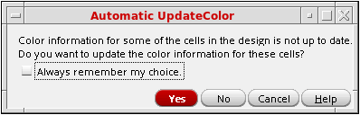

When the Color Engine Is Activated
When the color engine is activated and outdated coloring is detected in the current cellview, the Automatic UpdateColor dialog box appears.

Cadence recommends that you run the color update to ensure that coloring is up to date before further edits are performed. Otherwise, you might see unusual behavior when editing a design with outdated color information.
-
(Optional) Click the Always remember my choice checkbox.
When disabled, theupdateColorOnActivateenvironment variable is set toask, which causes this dialog box to appear each time any outdated coloring is detected in the current cellview, and the color engine is activated. When enabled, theupdateColorOnActivateenvironment variable is set according to the choice in the next step. -
Choose one of the following:
-
Yes
Updates colors through the hierarchy. If Always remember my choice is enabled, theupdateColorOnActivateenvironment variable is set toalwayscausing future color updates to occur automatically when the outdated coloring is detected and the color engine is activated. -
No
Color is not updated. If Always remember my choice is enabled, theupdateColorOnActivateenvironment variable is set tonever, You will need to manually update colors, as described in Recolor Selected Colors. -
Cancel
Color is not updated. TheupdateColorOnActivateenvironment variable is set toask.
-
Yes
Return to top